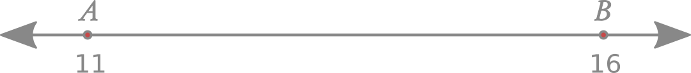
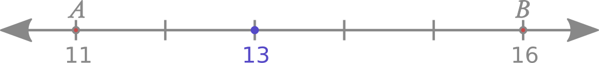
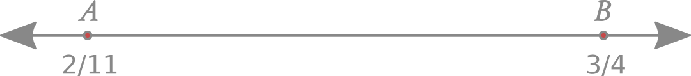
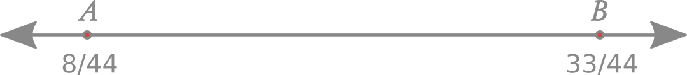

Hubungan Antar Bilangan
Pembahasan pada bagian ini agak sedikit rumit. Jadi, kita akan membahasnya secara perlahan, langkah demi langkah. Tidak perlu bingung, karena ini teramat praktikal (sering kita temui di kehidupan sehari-hari) dan kita telah mempelajari konsep-konsep dasarnya di bagian-bagian sebelumnya. Saatnya kita membahas tentang hubungan antar bilangan. Kita mulai dari membandingkan pecahan.
Membandingkan Pecahan
Membandingkan pecahan berarti kita menentukan mana pecahan yang besar dan pecahan mana yang kecil. Ini adalah hal yang mudah apabila penyebutnya sama. Jika penyebutnya sama, kita hanya perlu membandingkan pembilangnya saja. Misal, kita ingin membandingkan antara 5/11 dan 8/11. Penyebut dari kedua pecahan tersebut adalah sama. Yang perlu kita lakukan adalah membandingkan pembilangnya. Karena 8 lebih besar daripada 5, maka yang terbesar di antara kedua pecahan tersebut adalah 8/11.
Sedangkan apabila penyebutnya berbeda, kita tidak bisa langsung membandingkannya. Pertama-tama, kita samakan terlebih dahulu penyebutnya. Misal kita ingin membandingkan 3/5 dan 6/11. Maka kita samakan terlebih dahulu kedua penyebutnya menjadi 55, karena KPK dari 5 dan 11 adalah 55. Sehingga,
\[ \frac{ 3 }{ 5 } = \frac{ 3 }{ 5 } \bigg( \frac{ 11 }{ 11 } \bigg) = \frac{ 33 }{ 55 } \] \[ \frac{ 6 }{ 11 } = \frac{ 6 }{ 11 } \bigg( \frac{ 5 }{ 5 } \bigg) = \frac{ 30 }{ 55 } \]
33/55 ekuivalen dengan 3/5. Dan 30/55 ekuivalen dengan 6/11. Karena keduanya sudah memiliki penyebut yang sama, maka kita bisa membandingkan pembilangnya. Karena 35/55 lebih besar daripada 33/55, dengan kata lain, 3/5 lebih besar daripada 6/11. Atau boleh juga dikatakan bahwa 6/11 lebih kecil daripada 3/5.
Hubungan Antar Bilangan : Bilangan Bulat
Sekarang, mari kita bahas tentang hubungan antara dua bilangan bulat, khususnya, bagaimana kita dapat menemukan bilangan yang merupakan pecahan dari suatu jarak (yang ada di sepanjang garis bilangan) dari bilangan bulat yang lebih kecil ke bilangan yang lebih besar. Anggap saja kita sedang memikirkan bilangan bulat 11 dan 16. Kita tahu bahwa 11 ada pada lima unit di sebelah kiri dari 16, atau bisa dikatakan juga bahwa 16 ada pada lima unit di sebelah kanan dari 11. Atau dengan kata lain pula, keduanya terpisah sejauh lima unit (16 - 11 = 5).

Sekarang, anggap saja anda melakukan perjalanan pada garis bilangan. Anda berada di titik A, yang mana A ini adalah 11, dan anda harus menuju ke titik B, yang mana B ini adalah 16. Dari titik A ke titik B, anda sudah melakukan perjalanan sejauh 2/5 dari jarak A ke B. Pertanyaannya adalah, di mana anda berada sekarang?

Pada ilustrasi garis bilangan di atas, kita bisa melihat (secara visual) posisi kita pada titik biru. Namun kita tidak mengetahui (dalam bentuk bilangan) dimana titik biru tersebut berada.
Untuk mencari tahu hal tersebut, kita perlu mencari selisih antara titik A dan titik B, dengan cara mengurangkan nilai yang besar ke nilai yang kecil.
\[ 16 - 11 = 5 \]
Dan kita mengetahui jarak antara titik A dan titik B adalah 5 unit. Karena kita sekarang sudah melakukan 2/5 perjalanannya. Maka yang perlu kita lakukan adalah mengalikan* 5 dan 2/5 tersebut, sehingga,
\[ 5 \times \frac{2}{5} = 2 \]
Dari sini kita tahu bahwa kita telah melakukan perjalanan sejauh 2 unit dari titik A. Maka, untuk mengetahui dimana posisi kita sekarang, kita perlu menjumlahkan nilai pada titik A (11) dengan 2. Yang mana hasilnya adalah 11 + 2 = 13.

Dan kita mendapati bahwa 2/5 dari titik A ke titik B adalah 13.
Untuk memastikan bahwa anda memahami tentang "Mengapa harus dikalikan", maka kita akan menggunakan analogi seperti berikut.
Semisal, saya menjalankan bisnis bersama anda dengan perjanjian bahwa saya akan mendapatkan 2/5 dari keuntungan bersih harian, berapa pun keuntungan yang didapatkan pada hari itu. Hari ini, anda mendapatkan keuntungan sebesar IDR 100000. Karena saya mendapatkan 2/5nya, maka anda membagi IDR 100000 tersebut menjadi 5 bagian sama besar, yang mana itu adalah IDR 20000 (hal ini juga sama seperti yang kita lakukan di atas, yaitu membagi garis bilangannya menjadi 5 bagian sama besar). Bagian yang terbagi sama besar tadi adalah 1/5nya. Berhubung saya mendapatkan bagian 2/5, maka saya mengambil 2 bagian dari 1/5 tadi, yang artinya saya mendapatkan \( 2 \times 20000 = 40000 \). Atau bisa dituliskan sebagai berikut. \[ 100000 \times 2 / 5 = 40000 \] Ingat lagi pada materi sebelumnya, ekspresi di atas bisa kita ubah menjadi, \[ 100000 \times \frac{2}{5} = 40000 \] Itu sebabnya tadi saya mengatakan bahwa langkah selanjutnya adalah mengalikan saja selisih antara dua titik tersebut (5) dengan pecahan yang merepresentasikan seberapa jauh kita bergerak pada jarak antara titik A dan titik B (yang mana adalah 2/5).
Setelah melakukannya pada bilangan bulat, kita akan melakukan hal yang sama pada pecahan.
Hubungan Antar Bilangan : Pecahan
Langsung saja ke contoh soal.
Kita berada di titik A (2/11) dan kita harus menuju ke titik B (3/4). Dan kita sudah bergerak sejauh 3/10 jarak dari A ke B. Berada dimana kita sekarang?
Jika kita gambarkan ilustrasi mengenai titik A dan titik B, maka akan didapatkan ilustrasi seperti berikut.

Atau, kalau kita ingin menyederhanakan ilustrasinya, kita bisa gambarkan menjadi,

Kita tidak bisa langsung mengetahui jaraknya, kecuali apabila penyebutnya telah bernilai sama. Oleh karena itu, kita samakan terlebih dahulu penyebutnya.
\[ \frac{ 2 }{ 11 } = \frac{ 2 }{ 11 } \bigg( \frac{ 4 }{ 4 } \bigg) = \frac{ 8 }{ 44 } \] \[ \frac{ 3 }{ 4 } = \frac{ 3 }{ 4 } \bigg( \frac{ 11 }{ 11 } \bigg) = \frac{ 33 }{ 44 } \]
Sehingga, kita juga bisa menggambarkan ilustrasinya menjadi,

Sekarang, kita akan mencari selisih antara 8/44 dan 33/44.
\[ \frac{33}{44} - \frac{8}{44} = \frac{25}{44} \]
Kita sudah melakukan 3/10 perjalanan dari jarak titik A ke titik B. Atau bisa dikatakan bahwa kita sudah bergerak sebanyak 3/10 dari jarak sepanjang 25/44. Maka kita telah berjalan sejauh,
\[ \frac{25}{44} \times \frac{3}{10} = \frac{75}{440} = \frac{15}{88} \]
Setelah itu, kita jumlahkan nilai pada titik A (2/11) ke 15/88.
\[ \frac{2}{11} \bigg( \frac{8}{8} \bigg) + \frac{15}{88} = \frac{16}{88} + \frac{15}{88} = \frac{31}{88} \]
Dan kita menemukan bahwa kita berada pada 31/88. Atau dengan kata lain, 31/88 adalah 3/10 bagian dari 2/11 ke 3/4.
Catatan: Untuk memecahkan problem seperti ini, anda tidak perlu menggambarkan garis bilangan, karena penjelasannya akan sangat bertele-tele. Saya menggunakan ilustrasi seperti di atas hanya sekedar mempermudah pemahaman konsep.